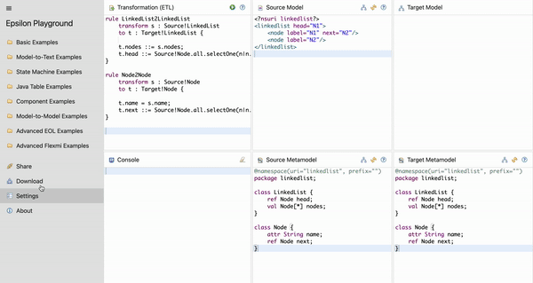

Linked List Reversal - ETL Implementation
ETL Transformation
To demonstrate the ETL capabilities, let's look at a simple example that reverses a linked list using ETL. A linked list with 2 nodes (N1 and N2) is reversed through model transformation.
Source Model

Target Model

ETL Definition
There are 2 aspects of the linked list which are changed from the source model to the target model (thus requiring two rules):
- The head of the linked list is swapped with its tail.
- The nodes are reversed i.e. pointing to the previous node instead of the next one.
First, the linked list's head is reversed:
Let's have a look at each line of code to understand ETL logic and semantics:
In line 1, rule declares a transformation rule with a unique name 'LinkedList2LinkedList'.
In line 2, transform keyword indicates the source parameter we want to transform in this rule. Thus, a source parameter name 's' and a source parameter type 'Source!LinkedList' (the source metamodel's LinkedList class is being referenced here).
In line 3, similar to the previous line's format, to keyword is followed by the target parameter name 't' and target parameter type 'Target!LinkedList'. The target element properties are being configured here. The open curly brace ({) indicates the start of the rule's body.
In line 5, the target element's nodes are assigned using the EOL SpecialAssignment operator (::=) to be the equivalent of the source element's nodes. Please note that ::= is the same as an equivalent() operation.
In line 6, the target element's head t.head is assigned the equivalent value of a node from the source model that points to null i.e. it is the last node.
In line 7, the close curly brace (}) indicates the end of the body and the dedent means the end of the transformation rule.
Second, the nodes are reversed:
In this rule, the source and target parameter types are also the same. Remember, the linked list is only meant to be reversed hence the structural properties of the linked list remain unchanged. In the transform statement, a source parameter 's' of the type 'Source!Node' (Node class in the source metamodel) is transformed to the target parameter 't' of the type 'Target!Node' (same Node class definition as in the source metamodel). The target element is assigned the same name as the source element. SpecialAssignment operator (::=) is not used here because name is a string attribute of a Node class and not a reference. The target element's next property is assigned the equivalent value of a node from the source model whos next value is the source node element 's'.
The example project also includes other important files: Source model (.xmi), Source metamodel (.emf) and a Target metamodel (.emf) which are listed below.
Source and Target Metamodel
@namespace(uri="linkedlist", prefix="")
package linkedlist;
class LinkedList {
ref Node head;
val Node[*] nodes;
}
class Node {
attr String name;
ref Node next;
}
Note: Usually source and target metamodels may not be the same. In this linked list reversal example, the data structure did not need to be changed but the property values.
Source Model
<?nsuri linkedlist?>
<linkedlist head="N1">
<node label="N1" next="N2"/>
<node label="N2"/>
</linkedlist>
Target Model
<?xml version="1.0" encoding="ASCII"?>
<LinkedList
xmi:version="2.0"
xmlns:xmi="http://www.omg.org/XMI"
xmlns:xsi="http://www.w3.org/2001/XMLSchema-instance"
xmlns="linkedlist"
xsi:schemaLocation="linkedlist target.emf"
head="//@nodes.1">
<nodes name="N1" />
<nodes name="N2" next="//@nodes.0" />
</LinkedList>
Development Platforms
There are many ways to interact with ETL: an online Epsilon Playground, using Ant (Eclipse) or using Java. Try the linked list reversal example project using any of the three options.
Online playground
Try ETL online
You can run and fiddle with an ETL transformation that transforms a linked list into its reverse version in the online Epsilon Playground.
Apache Ant (Eclipse)
Click here to download the linked list example project or head over to the online Epsilon Playground and select Download → Ant (Eclipse) as shown below

Next step is to import the project in Eclipse. Once the ZIP file is downloaded, open your Eclipse IDE and do File → Import → Existing Projects into Workspace → Select archive file → Finish.
Then, right click on build.xml and choose Run as → Ant Build to build the ETL project and generate the target model. Examine the generated model (target.xmi) to discover the linked list has been reversed!
Java (Gradle)
Download the linked list Java project.
Unzip the project and import it into an IDE of your choice (e.g. Eclipse, IntelliJ, VSCode). Make sure the IDE uses JDK 17 or higher.
Run src/main/java/org/eclipse/epsilon/examples/Example.java to generate target.xmi containing the target model. The target model is the reversed linked list.
To run Example.java in VSCode, make sure the Gradle extension is enabled and click on the Gradle icon in the sidebar then do playground-example → Tasks → application → run.